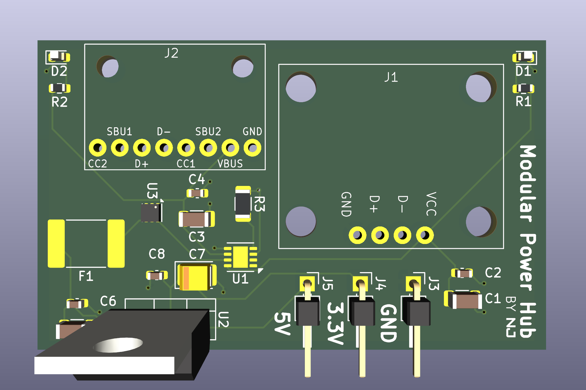
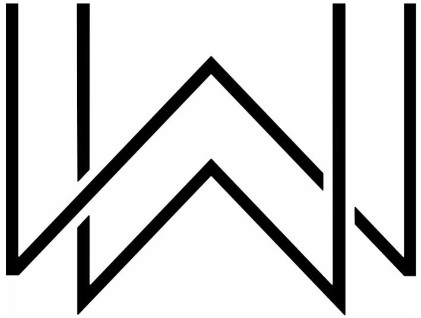

THE PORTFOLIO / SELECTED & EXPLORATORY WORK
Built to
understand.
Digital ICs, accelerator architectures, and the systems that shaped how I approach engineering.
9 projects

Dual-Core ML Accelerator
A dual-core hardware accelerator for the attention mechanism in transformer models, synthesized and place-and-routed in TSMC 65nm targeting 1 GHz.
Explore project
9-bit Differential SAR ADC
A fully custom-layout 9-bit differential SAR ADC in TSMC 65nm with bootstrapped sampling switches, achieving 50.5 dB SNDR and 59.5 dB SFDR, taped out as part of a 6-group top chip.
Explore project
8-bit Kogge-Stone Adder
A high-speed 8-bit Kogge-Stone Adder (KSA) using static CMOS logic, designed and simulated in Cadence.
Explore project
Bitcoin Hashing
Bitcoin hashing using SHA-256 as a cryptographic process that secures transactions on the Bitcoin network.
Explore project
CrCM Boost PFC
A 100 W universal-input CrCM boost PFC converter designed and verified in Simulink/Simscape, with generated C and STM32G4 target support.
Explore project
Cosmic Whisper
An educational game for people interested in optics and circuits, as part of research supervised by Professor Saharnaz, UCSD.
Explore project
Modular Power Hub
An intelligent dual-I/O power management system with automatic source switching.
Explore project
SonicCar
A voice-commanded autonomous vehicle with LiDAR navigation and deep learning stop sign detection.
Explore project
WearWise
WearWise, a smart IoT Wardrobe Management App.
Explore project